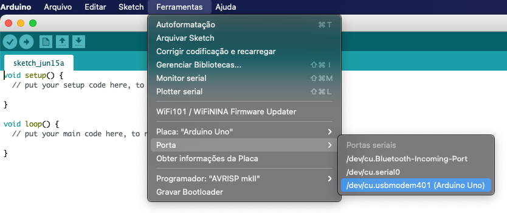
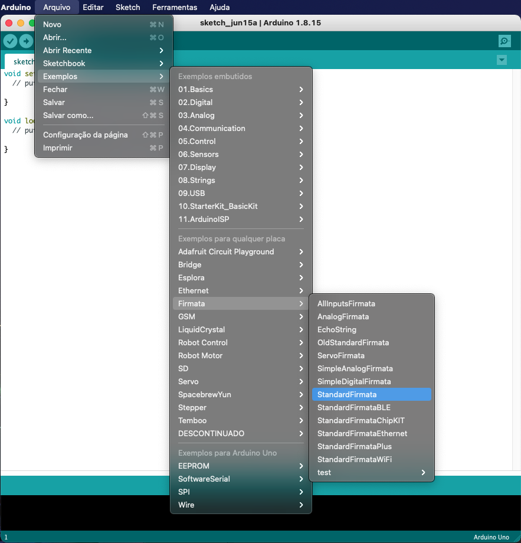

Configurando o Projeto!¶
A comunicação com protocolo Firmata¶
O programa comunica com o Arduino utilizando o protocolo Firmata, dessa forma precisamos carregar o protocolo Firmata uma única vez em nossa placa Arduino.
Para carregar o protocolo, é necessário instalar o Arduino IDE, disponível para Windows, macOS e Linux, para baixa-lo é bem simples basta ir ao site do Arduino e seguir a instalação bem simples.
Possuindo o Arduino IDE, vamos carregar o protocolo Firmata no Arduino, abra o Arduino IDE e conecte seu Arduino em uma porta USB. Em seguida, selecione o Arduino:
Com o Arduino selecionado vamos em Arquivo>exemplos>Firmata e selecionamos o sketch StandardFirmata e clicamos em carregar:
Feito isso fechamos e esta etapa está pronta.
Nota
Para usuários que utilizam o Arduino pela primeira vez (Etapa opcional). Ao abrir o presente software, se ele não identificar o Arduino diretamente, talvez seja necessário instalar os drivers do Arduino.
Isso geralmente acontece com os Arduinos chineses que contém o seguinte chip CH340.
Segue o link para instalação do driver em Windows: http://www.blogdarobotica.com/2020/03/21/instalando-driver-serial-para-arduinos-com-chip-ch340/
Basta abrir o software!¶
Ao abrir o software ele irá identificar a sua placa Arduino automaticamente.